Solution: Join, or Die
Answer: HEARTACHE
Written by Yanaphat Hemrattaphan
The title of the puzzle and the flavor text clue the solver to interpret the grid as a slitherlink. Upon solving the slitherlink (see the appendix for the full logical solution, the text outside the solution path can be read as REGARD ALL DIE FACES.
The next realization is that there are 20 triangles inside the loop. Together, this suggests that the area inside the path is a net of a d20 die, like the one here. The 1 and 2 inside the loop are given and allow the solver to uniquely assign the rest of the numbers to the remaining faces.
 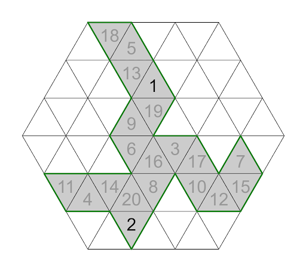
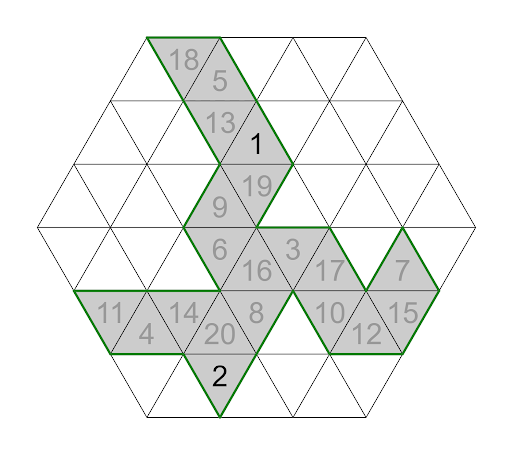Reading all the faces in the order of the die face values and using the given enumerations give the clue phrase 12TH UNDERTALE DEMO OST, which clues the answer HEARTACHE.
Author’s Notes
This puzzle was going to have an 18-letter long cluephrase. However, it was surprisingly hard to find one for the answer to this puzzle. It was even more surprising that putting more constraints to the cluephrase solved the issue.
Appendix: Logic
Note that this is one possible logical solution; others may exist.
-
Put Xs around zeros and dead ends. 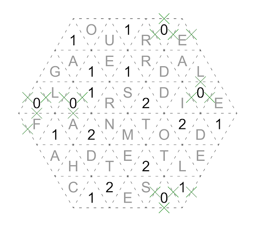
-
Complete the 1s. 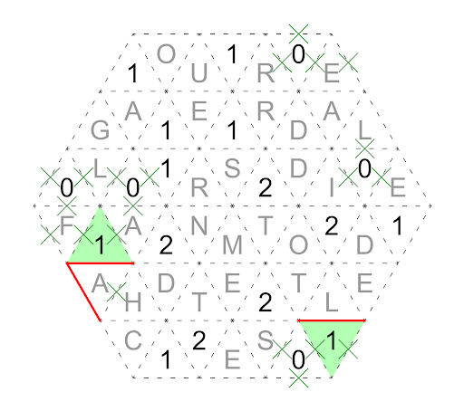
-
Apply the 2-2 pattern. (2's connected at a point must have opposite lines.) 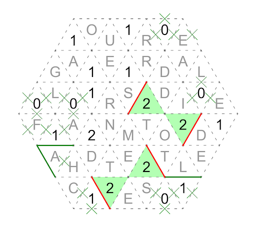
-
Extend the segment of the left side and complete the 2s. 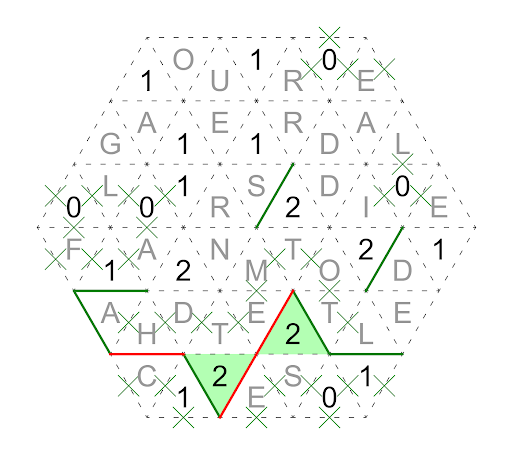
-
Apply the 2 pattern. (A 2 with a line coming into a point must have an opposite line.) 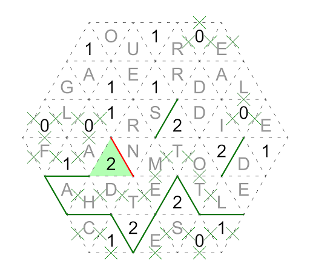
-
Assume that we add the blue segment. We know that the line from the 2s in green is going to be extended out inside the blue areas and complete the loop too early. Thus, we can put a X there and extend the line on the left upward. 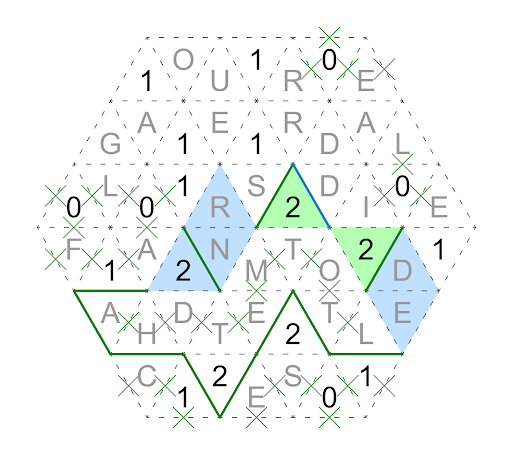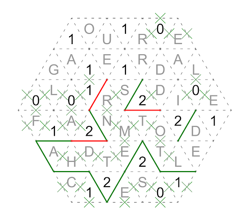
-
Similarly, if we add the blue segment, the line would stay in the blue area and we will not be able to complete the 1 in green. Thus, we can put an X there. 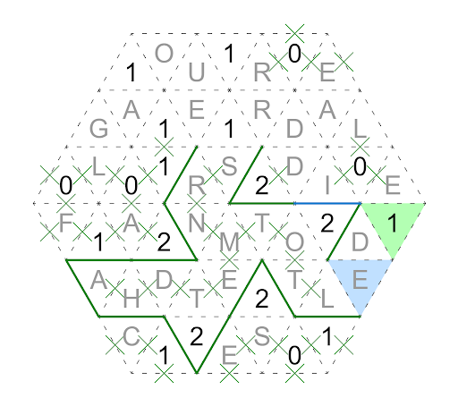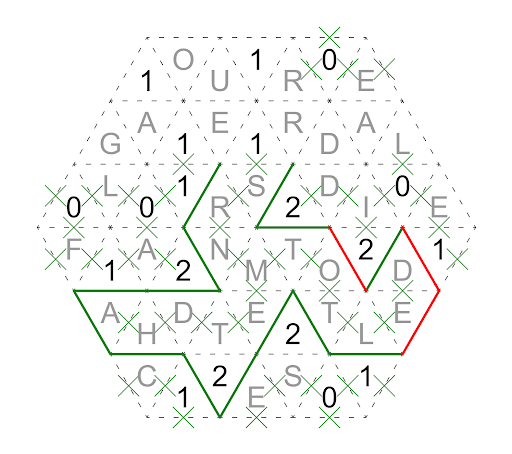
-
Similarly, if we add the blue segment, the line would stay in the blue area and we will not be able to complete the other 1s. Thus, we can put an X there. 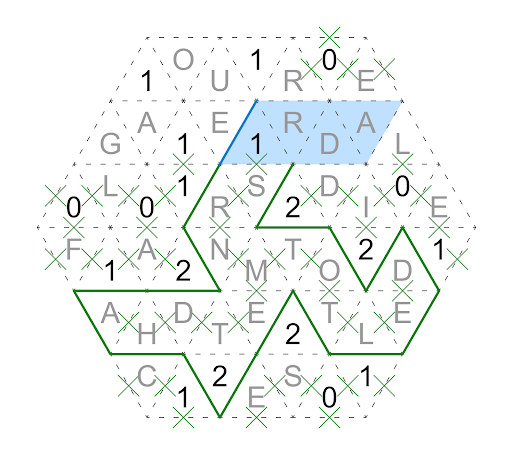
-
Complete! 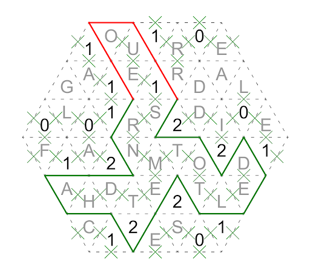